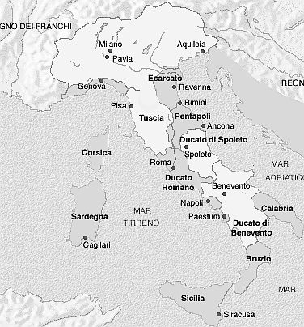

L'invasione dei Longobardi avvenne nel 568 d. C., quando la massa di barbari conquistò l'Italia centro-settentrionale, buona parte del mezzogiorno e vi si insediò. Questa nuova catastrofe che si abbattè sull'Italia faceva seguito alla guerra gotico-bizantina che per venti anni aveva devastato il Paese intero. Alle violenze e ruberie dei soldati si era aggiunta l'ostilità del clima con conseguenti carestie e numerose pestilenze, colpendo ovunque. In una frase dello storico Procopio vi si legge la terrificante situazione dei "rustici" nella carestia tra il 538 e il 542:
.
A questo quadro di desolazione e rovina si aggiunse l'arrivo dei nuovi barbari.

La situazione politica in Italia dopo l’invasione e la conquista territoriale longobarda (zona bianca). Le altre regioni si trovavano quasi tutte sotto il diretto domino bizantino. La Tuscia, la futura Toscana, mantiene e manterrà una propria identità culturale che la distinguerà dalle altre regioni meridionali e settentrionali.
Nel primo periodo della dominazione longobarda, le terre assoggettate compresa la Tuscia (Toscana) subirono ulteriori gravi danni: gli incolti aumentarono e la crisi agricola divenne permanente con lo spopolamento delle campagne. Senza manutenzione e a causa dell’assenza di una organizzazione pubblica, il sistema viario romano cedette definitivamente: i ponti franarono, molte strade scomparvero e le città si ridussero ancora più a piccoli centri circondati dalle antiche macerie e da una natura selvaggia. Un esempio su tutti la spianata del Casone completamente impaludata e acquitrinosa dall'epoca tardo-imperiale e così ancora nel 1001 al tempo della fondazione dell'Abbazia a Isola, mentre l'archeologia ci dimostra una florida regione nel periodo etrusco. Il commercio quasi scomparve così come la moneta sostituita dal baratto in una economia chiusa. Le violenze verso la popolazione non mancarono e la vita nelle campagne non era sicura. Il saccheggio era di norma e il procacciarsi grano e fieno per uomini e cavalli avveniva senza preoccuparsi della proprietà, anche se in linea generale i longobardi, non essendo agricoltori, rispettarono i coloni che comunque vissero in quegli anni di carestie, di pestilenze, di disastri naturali e violenze umane uno dei periodi più tristi e miseri della storia italiana.
I longobardi si impossessarono della proprietà fondiaria e i re imposero i gastaldi nei centri maggiori, come governatori e tutori della proprietà reale, come si ritrovò Siena e il suo circondario. Certamente anche le terre di Quercegrossa e Petroio di proprietà regia vennero gestite da qualche arimanno longobardo.
La popolazione rurale rimase asservita alla terra, ma, al contrario di quanto era avvenuto con i Goti che avevano schiavizzato tutta la popolazione, alcune categorie mantennero lo stato libero e i loro diritti.
Un secolo dopo e oltre, con la conversione al cristianesimo, l'integrazione costante con i romani e l'accettazione di usi e costumi latini portarono i longobardi a distribuirsi nelle varie classi sociali, anche se rimase la distinzione della dipendenza dalla legge longobarda o, per i romani, da quella romana. Negli ultimi anni della loro dominazione, terminata nel 774, vivono nella Longobardia e Tuscia uomini liberi, semiliberi e servi.
Tra gli uomini liberi non longobardi si annoverano chierici, mercanti, maestri d'arte e livellari (coltivatori affittuari di terre) e nelle città l'amministrazione locale è in mano all'assemblea cittadina e ai vescovi. Nelle campagne si vanno lentamente formando come unità di produzione le curtis, ossia centri agricoli autosufficienti disposti intorno a una abitazione sempre più fortificata o a un castello dove vivono padroni, artigiani e coloni assoggettati alla terra che lavoravano; sono i "servi della gleba". I campi adiacenti la corte vengono protetti con fossati, siepi e recinti contro uomini e animali.
Quercegrossa, Petroio e Larginano facevano certamente parte di questo sistema e i loro boschi si popolarono di pecore e suini guardati da porcari; allevamenti sui quali si basava l'economia longobarda.
Come d'altronde è già in atto da tempo, si accentua il fenomeno delle donazioni di mansi e corti alle grandi abbazie di fondazione regia e marchionale come ai più modesti monasteri che divengono proprietari di grandi estensioni di terre.
In questi anni si diffonde in Italia la devozione longobarda a S. Michele Arcangelo, con conseguente titolazione di chiese e oratori a questa creatura celeste. Si potrebbe quindi far risalire ai decenni finali dei longobardi il primo edificio di culto a Petroio, dedicato appunto a S. Michele da uno sconosciuto signore di legge longobarda.
Le Pievi
Dal V al IX sec. si ha nelle campagne una forte diffusione e radicamento del cristianesimo e nell’Italia centro-settentrionale si assiste al fenomeno del sorgere delle pievi che vanno imponendosi come centri religiosi rurali il cui pievano amministra battesimi, seppellisce i morti, celebra ecc. Esse nascono presso sedi di mercati o importanti centri amministrativi e castelli ai quali le popolazioni circostanti fanno riferimento, divenendo luoghi di incontro delle stesse, dove insieme ad affari si incomincia a parlare di interessi comuni. Col tempo le pievi vanno delineando il loro territorio di influenza sul quale sorgono oratori privati e chiese parrocchiali fino a diventare intorno al XIII sec. vere e proprie circoscrizioni ecclesiastiche sotto il controllo del Vescovo di appartenenza. Ma per arrivare alla completa sottomissione al Vescovo diocesano occorsero decisi interventi dei vescovi stessi e della Santa Sede. Col feudalesimo e la nascita di molti monasteri e abbazie, erano sorti ovunque piccoli oratori nelle corti (vedi Quercegrossa) e oratori privati sottoposti ai signori o ai monaci (vedi Petroio e Larginano) venendosi così a creare una contrapposizione con le pievi per l’amministrazione dei battesimi, dei funerali, della riscossione delle decime e altro. Alla domanda se i religiosi dei conventi potessero esercitare funzioni pastorali o se il Vescovo avesse diritto di nominare cappellani ecc., rispose nel 1123 il concilio Lateranense I. Si ordinò la piena sottomissione dei monaci ai vescovi e inoltre ordinò loro di astenersi da ogni celebrazione pubblica di messe, di dare la penitenza e l’estrema unzione. Naturalmente queste chiare disposizioni che proibivano un servizio di tipo parrocchiale vennero infrante dalla stessa Chiesa concedendo privilegi a questo o quel monastero, ma in generale si arrivò al controllo vescovile delle pievi e delle parrocchie le quali, nel frattempo, in un modificato contesto civile e religioso, erano sorte numerose sul territorio plebano, teoricamente ancora sotto il controllo del pievano, ma in pratica a questi era rimasta soltanto l’esclusiva dei battesimi, essendo ormai tutti gli altri sacramenti di competenza dei rettori parrocchiali. Per concludere, c’è da dire che questo conflitto di diritti, privilegi e competenze fra signori, pievani, vescovi, parroci e comunità ebbe mille sfaccettature e situazioni diverse, e si protrasse a lungo per secoli; in pratica non si concluse mai permanendo a famiglie e abati alcune prerogative esercitate attraverso patronati di parrocchie e benefici diversi.
Difficile dire quanto sia antica una pieve o l'altra; manca per quei secoli quasi del tutto una documentazione. Per quanto ci riguarda, troviamo il nostro territorio sotto il controllo di due pievanie: Lornano e S. Leonino. Sui loro territori nasceranno quelle chiese che verranno a costituire le parrocchie: Petroio nel piviere di S. Leonino e Quercegrossa, Larginano, S. Stefano e Basciano sotto quello di Lornano.
Il dato tra i più antichi sulle due pievi è la bolla di conferma di proprietà di pievi, xenodochia (spedali) e castella che papa Clemente III fa alla chiesa di Siena nel 1189.
Il documento riporta la "Plebem de Lornano" e la "Plebem de Sciata" “con tutte le loro pertinenze”, oltre a quelle di “Lilliano” e “S. Agnese”, attribuzione di queste due pievi già da tempo fortemente contrastata dalla Chiesa di Firenze che le considera sul suo territorio. La pieve di S. Leonino dipendeva invece dalla diocesi di Fiesole, incuneata in territorio senese; oltretutto, questa diocesi riuscirà entro pochi anni, dopo la fissazione dei confini tra Firenze e Siena, a strappare le due pievi di Lilliano e S. Agnese alla giurisdizione di Siena.
Naturalmente l'istituzione di queste pievi è molto più remota del 1189. Ad esempio Lornano sembra essere del IX sec. e sarebbe stata fondata dai canonici senesi e rientra in quel processo di conquista e attestazione sul territorio da parte della Chiesa di Siena.
Ora è bene aggiungere che il territorio di una “diocesi” ecclesiastica sotto il governo del Vescovo venne più o meno a coincidere con il territorio della antica amministrazione romana detto “diocesi”; il nome rimase alle circoscrizioni ecclesiastiche.
Quando poi alcuni secoli dopo (XII sec.) si ha la nascita dei Comuni come enti politici, questi in pratica si trovano già un territorio d'influenza corrispondente a quello di competenza del loro Vescovo, ed entro questi confini diocesani si espanderà il dominio cittadino. Come d’altronde avverrà per le antiche pievi, sottomesse al Vescovo sul cui territorio diocesano esse sorgono.
Vediamo allora i confini tra Siena e Firenze rispettare solo parzialmente questo criterio di possesso. E se S. Leonino con Castellina in Chianti (dei nobili del Trebbio) saranno di Firenze per antica dipendenza dalla Chiesa di Fiesole, le pievi senesi di Lilliano e S. Agnese, il cui territorio sarà assegnato a Firenze nel 1203, cadranno sotto la giurisdizione di Fiesole, mentre Lornano e Pievasciata resteranno giustamente in ambito senese. Infatti, come abbiamo visto, non fu indolore il consolidamento dei confini senesi diocesani e poi comunali, con gravi perdite territoriali, ma l'esempio lampante della lunga lotta aperta fra le diocesi toscane per il controllo sulle pievi ci viene dal secolare scontro tra Siena e Arezzo per il possesso di Pieve a Pacina e altre 18 chiese. Risale la questione nientemeno che al periodo longobardo all'inizio dell'VIII secolo al tempo del vescovo Adeodato (longobardo) e Rotuldo, gastaldo del re Ariperto. La vertenza si protrasse a lungo e venne chiusa da un Papa molti secoli dopo con il risultato che Castelnuovo Berardenga, Dofana, Montaperti e altre località senesi rimasero, per il religioso, sotto il Vescovo di Arezzo.
I Franchi
La sconfitta militare dei Longobardi da parte dei Franchi nel 774 porta quest'ultimi a divenire i nuovi dominatori del Nord e Centro Italia. Questo popolo, ormai civilizzato e convertito al cristianesimo, imporrà all'Italia il suo governo con Carlo Magno, incoronato imperatore a Roma da papa Leone nella notte di Natale dell'anno 800. Le prime mosse di Carlo per garantirsi il potere politico e amministrativo furono quelle di sostituire i duchi longobardi con i conti franchi, mentre i funzionari locali longobardi rimasero al loro posto col nome di vicari. Carlo ricoprì tutto il territorio di vassalli a lui fedeli, ai quali assegnò le terre confiscate ai duchi longobardi ribelli e sconfitti. I vassalli a loro volta concessero ai valvassori e valvassini terre da amministrare, ma tutti privi dello status di proprietari in quanto i beni alla loro morte sarebbero ritornati all'Imperatore. Inoltre suddivise l'impero in comitati, con a capo un comites (conte) con funzioni di giurisdizione, da lui direttamente dipendenti. Senza entrare nei particolari dell'organizzazione e della politica imperiale, si deve comunque dire che questa avrà come conseguenza l'affermarsi nel IX secolo del feudalesimo, ossia il feudo come potere personale, e da esso nasceranno quei signori locali piccoli e grandi dotati di autorità quasi assoluta, i quali domineranno la scena politica fino all'affermarsi delle città sul contado. Il potere imperiale si manterrà per alcuni secoli, ma lentamente sarà intaccato dalle stesse iniziative imperiali come la divisione dell'impero, la concessione detta “il Capitolare di Kiersy” con l'ereditarietà dei feudi maggiori che produrrà tante signorie locali, gli altrettanto controproducenti benefici a enti religiosi e i tanti diritti e privilegi concessi alle comunità cittadine. La lotta con la chiesa per le investiture fu altrettanto perniciosa. La somma di questi eventi prima indebolì il potere politico imperiale verso i signori e le città, poi lo rese del tutto teorico.
Inizio pagina
Vai al capitolo seguente I Secc IX-XI
Vai all'Indice dei Capitoli